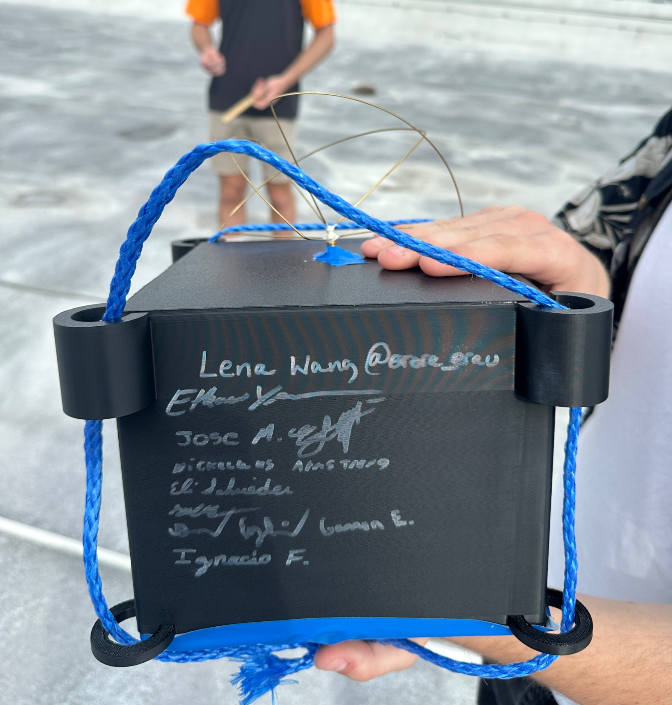

Aerospace engineering / Astronautics
Building hardware
that earns its flight.
I’m Jose Murphy, an aerospace engineering student focused on structural analysis, mechanical design, and the work between a load case and a real vehicle.

From analysis to manufacturing to flight test.
The best engineering work survives contact with the real world. I like the full loop: understand the loads, make the model, build the part, and learn from what the hardware tells you.
Three projects.
One engineering thread.
A brief introduction to the work. Each project has its own page with the design decisions, analysis, and hardware behind it.

Aerospace / Structures / Mechanical design
Make the model useful.
Make the hardware real.
Aerospace engineer
in the making.
I’m studying Aerospace Engineering on the Astronautics track at Embry-Riddle Aeronautical University, graduating in May 2028. I’m interested in mechanical design and structural analysis for launch and space hardware.